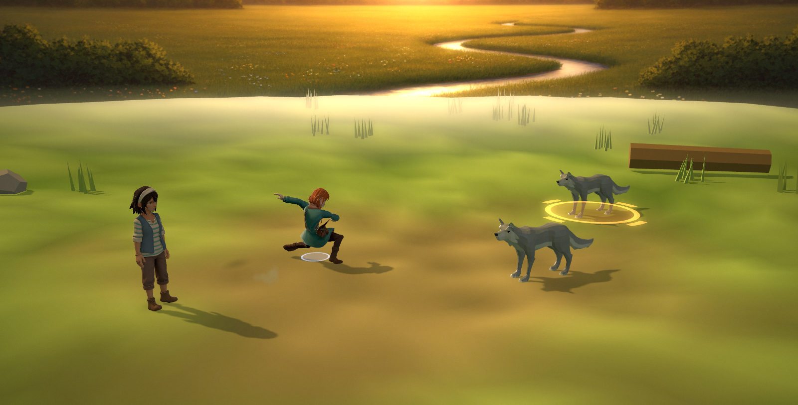
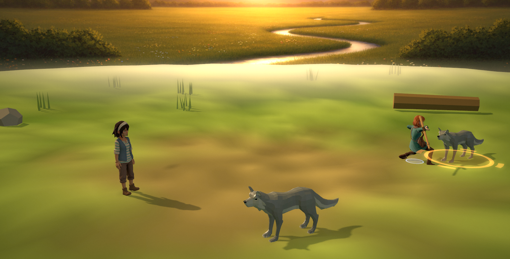
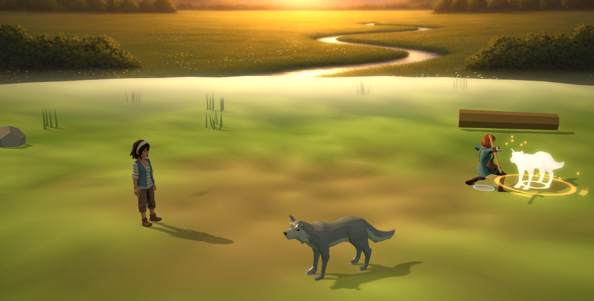
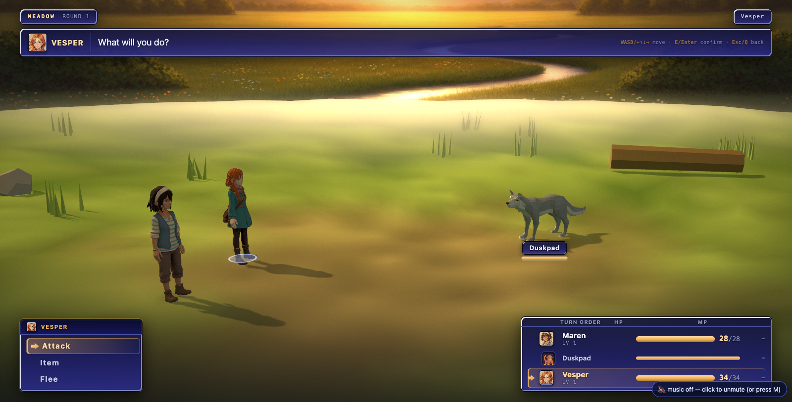
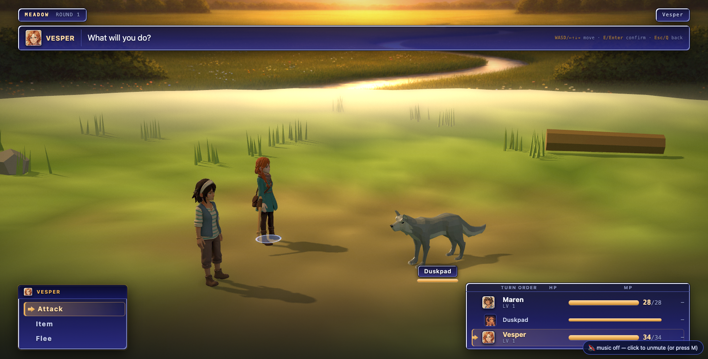
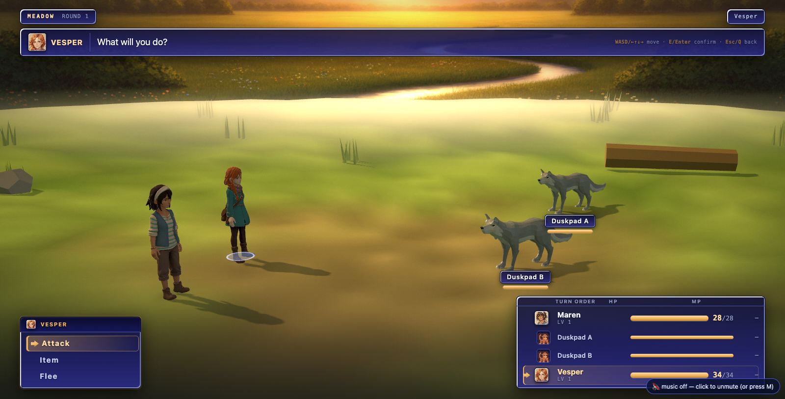
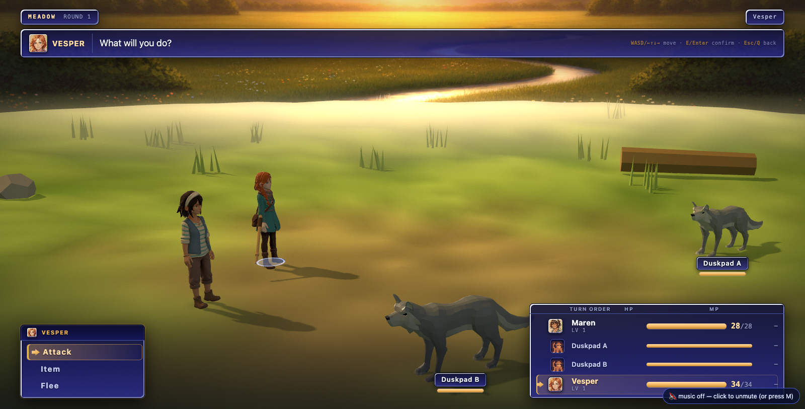
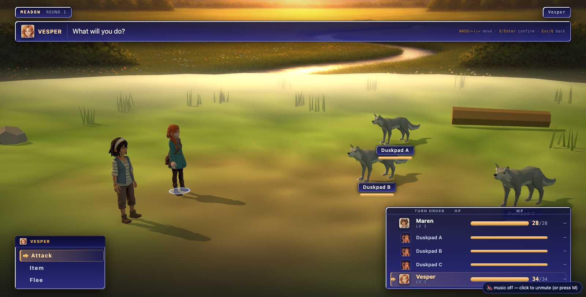
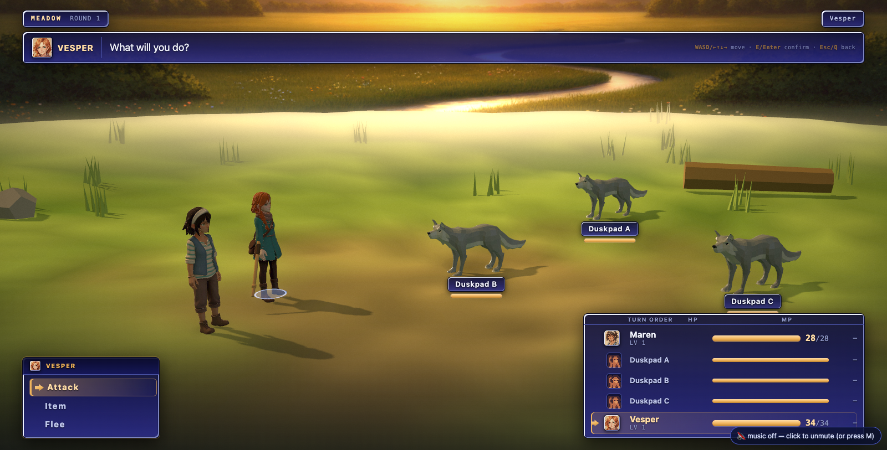

Battle wave 1 — CONTACT (bet C) and STAGING SOLVED AGAINST THE FRAME (bet G)
2026-08-08 · every number below was read out of the running game by
node tools/battle_contact.mjs --port=3000 --tag=<before|after> at 1600×813, real GPU,
three r185, seed 4242, party [vesper, maren]. The brief and the evidence they answer:
docs/plans/battle-presentation-inventory.md
§5 and §2, board at docs/qa/battle-audit/.
1. THE ATTACKER NOW ARRIVES
“act.lungeM is 1.35 m against a minimum slot gap of 5.21 m — the attacker
covers 25.9 % of the distance, so flash, sparks and shock-ring fire on a body 4 m from the
swing.” (audit §5)
| measurement | before | after |
|---|
| attacker–target centre distance AT the damage event | 6.54 m | 1.32 m |
| the bet’s bar | ≤ 1.40 m — PASS |
| damage fires at (ms after the body starts moving) | 300 (a constant) | 560 (the clip’s own contact frame) |
| turn wall-clock, mean over a whole autoplayed fight | 1965 ms | 1966 ms (+0.05 %) |
| turn wall-clock, median | 1829 ms | 1832 ms (+0.16 %) |
| whole fight, 7 actions | 20.35 s | 20.43 s (+0.4 %) |

BEFOREthe swing. 6.54 m of grass between the blow and the wolf.

AFTERthe swing. She is standing over it, 1.32 m centre to centre.
 BEFOREthe impact frame, from the audit’s own sequence
(
BEFOREthe impact frame, from the audit’s own sequence
(docs/qa/battle-audit/seq-3-impact.png) — flash, sparks and shock ring, on a body nobody touched.

AFTER70 ms after the blow, inside the 90 ms hit-stop: she is standing on it, staff through, the wolf hot white.
The before column here is the audit’s capture rather than this
instrument’s, and that is a correction on the record: the first version of
battle_contact.mjs photographed its “impact” at the END of its sample
window, by which time the attacker has walked home. A true picture of the wrong moment is worse
than no picture. It now shoots 70 ms after the flinch call, and the mislabelled
before-frame was deleted rather than kept.
How the strike station is derived
Never a metre value. The attacker walks to
target − n̂ · standoff, where standoff = (wattacker + wtarget) / 2 × 1.05 + 0.22
and each w is the body’s own Box3 width as the loader measured it out of its GLB
(a duskpad is 2.07 m across at 1.05 m tall; a party rig is 0.73 m). Clamped to
0.80–1.32 m, which is what makes the receipt above hold for a creature nobody has authored
yet. The travel is therefore correct at any slot geometry — including the ones bet G moves
them to on the next section of this page.
How the contact frame is derived
Nothing in the pipeline carried one. The donor clips are CC0 packs retargeted by
tools/vesper_retarget.py, glTF has no event track, and the 37 % in
CFG.act.fit’s comment was measured by hand on one clip and applied to every
body in the game. So contactFrac() derives it: the clip’s own rotation tracks are
resampled on a 72-step lattice through their own interpolants (the same ones the mixer
uses — this reads the clip the player sees, not the keys on disk), the angle between
successive orientations is summed over the arm chain
(/hand|wrist|forearm|weapon|palm|grip/, falling back to the whole body for a
quadruped), smoothed with a 3-tap box, and the argmax taken: a swing’s contact is where
the arm is moving fastest. The clip is then time-scaled so that instant lands on the
turn’s damage beat. A clip with no rotation track at all falls back to the hand-measured 37 %.
Where the time came from
Out of the announce beat, not added to the turn.
Battle.pacing.announce 560 → 300 and a new approach: 260, leaving
announce + approach + wind = 860 ms — exactly what announce + wind was.
stage.act() now RETURNS the millisecond the blow lands and the screen waits for that
number instead of a constant; a stage that answers nothing (the DOM fallback) keeps the whole
budget, so the wall clock is the same on either path. Measured, not asserted: the table above
times a real autoplayed fight by wrapping the stage’s own act()/flinch().
Hit-stop
90 ms at contact, 150 ms on a KO. Everything on the stage — mixers, tweens, camera
shake, the flash decay, the idle drift — runs off one virtual clock, so the stop freezes
all of them on the same frame; a stop that freezes only the mixer is a stutter. It keeps the
absolute-timestamp property the tweens were built on: the skew only advances from inside a
rendered frame, by a delta clamped to 100 ms, and only while a stop is live — so a hidden
tab (where rAF does not run) advances it by nothing, wakes to find the stop expired, and finds
every tween finished, which is the only correct answer.
2. THE STAGING IS SOLVED AGAINST THE FRAME
“36 % of frame width between nearest party body and nearest foe; foes render
89–115 px tall against party 186–225 px in an 813 px frame.” (audit §2)
The six constants in CFG.form are the shape — who stands beside whom, and how
the chevron and the alternating jog keep two bodies off one screen ray. They are good and they
are kept. What they never knew is where the camera is. So the form is now solved: five scalars
(how far out each line stands, how far its members fan sideways, how far apart in depth, and how
deep each line sits) are searched by deterministic coordinate descent from six fixed starts,
scoring every candidate by projecting it onto the rest camera before a body is built. It
runs once, synchronously, at battle start; nothing moves afterwards.
| 1600×813 | foe silhouette | party–foe, centre to centre | empty centre | min screen pair | 180 rule |
|---|
| 2v1 before | 101 px (12.4 %) | 610 px (38.1 %) | 29.4 % | 1.90 | OK |
| 2v1 after | 125 px (15.4 %) | 382 px (23.9 %) | 13.6 % | 1.75 | OK |
| 2v2 before | 89–114 px (10.9–14.1 %) | 580 px (36.3 %) | 26.7 % | 0.65 | OK |
| 2v2 after | 108–165 px (13.2–20.3 %) | 377 px (23.5 %) | 10.9 % | 1.88 | OK |
| 2v3 before | 82–125 px (10.1–15.3 %) | 538 px (33.6 %) | 24.9 % | 0.47 | OK |
| 2v3 after | 82–114 px (10.1–14.0 %) | 371 px (23.2 %) | 14.4 % | 1.50 | OK |
min screen pair = the closest two bodies on screen, in units of their summed
half-widths: 1.0 is two bounding boxes exactly touching, below 1.0 is an overlap. The shipped
build put two duskpads at 0.47 — two monsters inside each other.

BEFORE2v1

AFTER2v1

BEFORE2v2

AFTER2v2

BEFORE2v3 — and the “Duskpad C” tag half behind the turn-order window, audit §2’s last bullet.

AFTER2v3
Three things the solve had to be taught, each by a measurement
- The weights were a ranking, and the first one was wrong. At the first pass the
UI keep-out term was worth seventeen times the entire foe-size deficit, so the search bought a
clean frame edge with exactly the thing the audit is complaining about. Foe silhouette now
carries the heaviest weight, and it is scored on the MEAN foe first and the minimum second —
a chevron’s far slot is small by construction, and pricing the minimum as hard as the mean
just collapses the depth spread, which shows up immediately as screen overlap.
- It had no way to fan a line out. The knobs moved the foe line and set its depth;
nothing opened it sideways, and at this camera sideways is the only thing that pulls two
neighbours apart on screen. Three duskpads measured 0.82 on the pair ratio at every setting the
search could reach. A
jog scalar (the alternating jog, the chevron and the two-rank
offset) took 2v3 from 0.47 to 1.50.
- Nothing checked that a body was in the frame. Every keep-out rectangle lives inside
0..1, so a foe at screen x 1950 of a 1600 px frame reported a clean miss on all of them. The
search fanned three duskpads until one stood off the right edge entirely — green on every
target, wrong in the picture. Containment is now a hard refusal. Same class one step later: the
name tag was tested as a POINT, and a duskpad’s anchor missed the turn-order window by four
thousandths of a frame while its ~90 px tag was still half behind it. The tag has width now.
The residual, named
2v3 gets no bigger. Three duskpads are 2.07 m long each; at a silhouette the player
can read they want ~295 px of frame apiece, and the foes’ half of a 1600 px frame is ~800.
Big AND separated AND in frame is arithmetically impossible at three foes with this camera
fixed, and the solve trades correctly: it spends the difference on depth and on the centre gap
(24.9 % → 14.4 %) and on ending the overlap (0.47 → 1.50), and leaves the silhouette
where it was. A forced probe that does make them big
(--cfg='{"force":{"xF":0.5,"spread":0.85,"dzF":2.8,"jog":1.6}}', 101–159 px,
pair 1.17) puts the near duskpad’s centre at screen x 0.969 with half its body off the right
edge — a cropped monster, refused. This one is a camera problem, not a staging problem,
and it is bet B’s to solve, not this lane’s.
3. GATES
| gate | result |
|---|
node tools/battle_sim.mjs | ALL ENVELOPES GREEN · 6 engine property tests |
node tools/encounter_sim.mjs | ENCOUNTER INTEGRATION GREEN |
node tools/economy_test.mjs | 228 passed, 0 failed |
node tools/arena_playtest.mjs --port=3000 | ARENA PLAYTEST GREEN — contexts, teardown, heap flat when warm (drift 1.9 MB) |
node tools/transition_test.mjs --port=3000 | 162 ok / 6 failed — and the same 162/6 with both battle modules pinned to a7cc3891 (pre-wave) in an otherwise identical symlink tree: same four doors, same repeat-count drift, byte-identical {geo:1, tex:1} deltas. The leak predates this wave. Console gate clean; UILOCK held; battle-in-town green. |
The kernel was not touched. battle_rules.js is byte-identical; nothing here computes
a number, changes turn order or touches damage. The seam grew exactly two things: two optional
arguments on stage.act() and a return value.